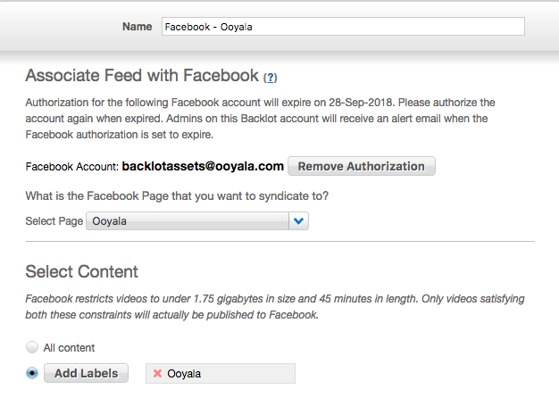

With Facebook syndication, publishers can easily set up a feed that automatically
publishes selected videos in the Backlot CMS to a user's Facebook page.
In Backlot:
- Go to the Publish tab, then subtab External
Publishing.
- Select Facebook and click New to create a new feed.
- Log in to your Facebook account and grant the requested permissions.
- In Backlot select the Facebook destination page.
Note: Previously it was possible to
publish videos also to a user's Facebook timeline, events, and groups. However, Facebook
has recently deprecated the support for these destination types.
- Then, in Select Content select All content to syndicate all videos to Facebook or select Add Labels
to choose specific labels. All uploaded videos will be public unless you make them private in Facebook.
